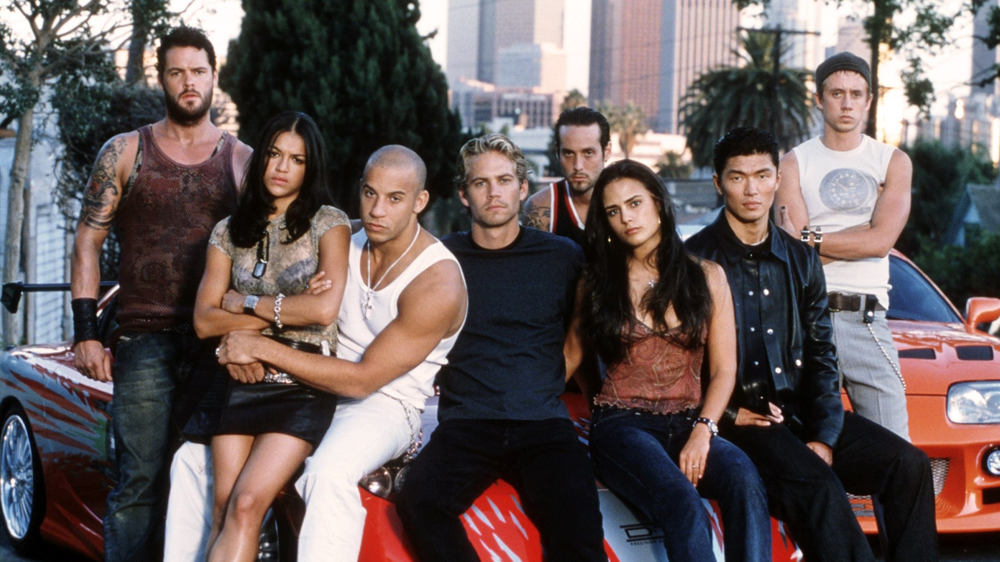

The Fast and the Furious
The first movie in the saga was based on an article titled "Racer X" about street racers in New York City. The plot focuses around two main characters: Dominic Toretto (played by Vin Diesel), the charismatic leader of a team of misfit street racers who hijack 18-wheelers transporting electronics to make ends meet; and Brian O'Connor, an undercover LAPD officer investigating the hijackings.
Brian wins Dominic's trust by racing against and subsequently aiding in his escape from police at the end of the illegal street race. Slowly but surely, he infiltrates the tight-knit group of racers.
When a final hijacking attempt goes awry, Brian must reveal himself to be an undercover police officer in order to save the life of Dom's right-hand man Vince. After a final showdown between Brian and Dom, during which Dom wrecks his car and severely injures himself, Brian allows Dom to escape using his car partly because of a shared moral code, but also because Brian is in love with Dom's younger sister Mia.
The plot of the movie has been compared to the formula for Point Break. The saga continues over several installments to increasingly ridiculous stakes and settings as Dom's team travel the globe both avoiding and aiding various law enforcement agencies in political flip-flops that serve only to extend the story. The saga is slated to end with a tenth installment to be released in 2021.
For more information, visit the Fast and the Furious wiki.